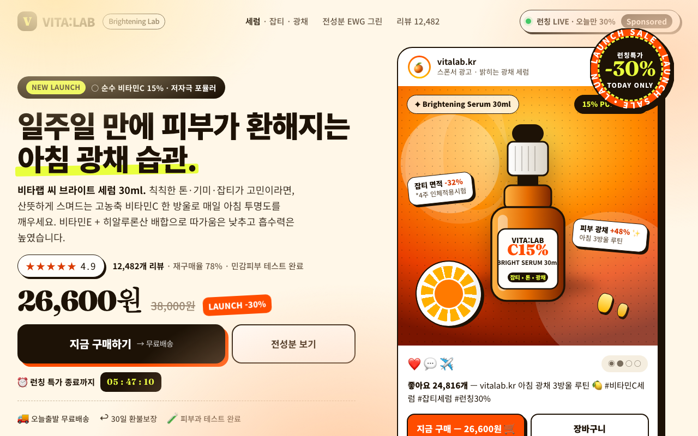

| issue | opened | resolved | attempts | tried |
|---|---|---|---|---|
| 물체 형태(LO)·움직임(MT) 반응이 낮음: 뚜렷한 사물 실루엣이 없는 텍스트 위주 화면 | r0 | open | 3 | r2: 라임 빔 제거, 340px 틸트(-8deg) 병 실루엣 단독 배치+수평 스피드선3개+낙하 물방울 궤적과 float 애니메이션으로 모션 표현 / r3: SVG병·빔 제거하고 실제 세럼 도포 클로즈업 사진을 정사각형 가득 채운 단일 주인공으로 교체+단일 라임 사선 리본과 스피드선으로 모션 표현 |
| 장소 영역(PPA)이 우세: 배경 풍경이 화면을 지배해 내용이 묻힘 | r0 | open | 3 | r2: 배경 그라디언트/big-C/grain/오렌지슬라이스/중복칩 제거, 좌측 복사본 솔리드 페이퍼 카드+우측 솔리드 잉크+단일 오렌지 디스크로 제품 단독 프레임 / r3: 그라디언트/big-C/grain/오렌지슬라이스/중복칩 제거, 좌측 솔리드 페이퍼 카드+우측 타이트 크롭 사진 한 장으로 환경 단순화 |
| r | ui | 뇌 | 심사위원 | kept | changes | sourced photos |
|---|---|---|---|---|---|---|
| r0 | 0.645 | 0.578 | 0.75 | ✓ | ||
| r1 | 0.571 | 0.525 | 0.64 | · | Bottle enlarged to 270px hero silhouette on bold -18deg lime diagonal beam with ; Simplified ad-photo to solid deep-orange + single diagonal panel, removed big-C/; Cut duplicate badges (price-off pill, dark pill, second CTA, cart button, 2nd ch | |
| r2 | 0.632 | 0.497 | 0.78 | · | 라임 빔 제거, 340px 틸트(-8deg) 병 실루엣 단독 배치+수평 스피드선3개+낙하 물방울 궤적과 float 애니메이션으로 모션 표현; 배경 그라디언트/big-C/grain/오렌지슬라이스/중복칩 제거, 좌측 복사본 솔리드 페이퍼 카드+우측 솔리드 잉크+단일 오렌지 디스크로 제품 | |
| r3 | 0.530 | 0.436 | 0.61 | · | SVG병·빔 제거하고 실제 세럼 도포 클로즈업 사진을 정사각형 가득 채운 단일 주인공으로 교체+단일 라임 사선 리본과 스피드선으로 모션 표현; 그라디언트/big-C/grain/오렌지슬라이스/중복칩 제거, 좌측 솔리드 페이퍼 카드+우측 타이트 크롭 사진 한 장으로 환경 단순화; 플로팅칩·이중필·마퀴·박스형 별점 제거하고 30% 배지 하나로 통합, 증거요소를 한 줄로 축소 | Shrinkflation Vitamin C,, Clinic offering 10000 JP, 2023 Kosmetyki Ziaja.jpg, Cosmetics-1078712 1280.j, Woman applying makeup po, Woman applying serum on |